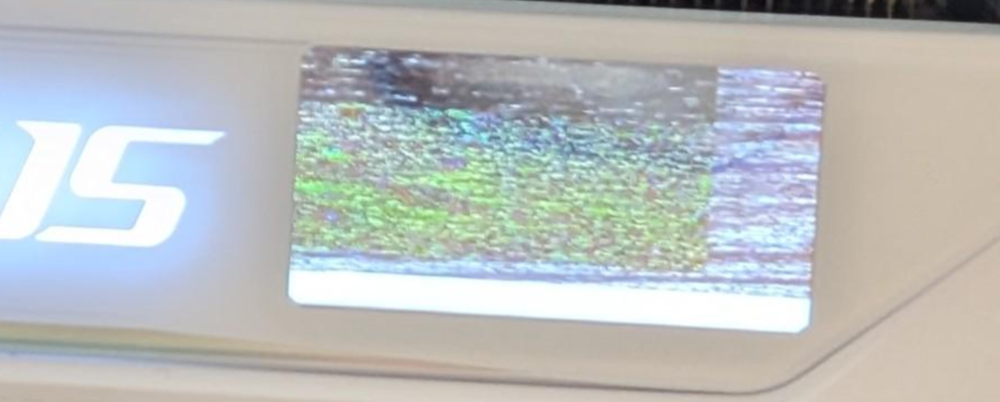

Short erase-completion wait
The AP firmware's SPI status/WIP poll helper waited with a timeout count of 300, which was too short for the observed native 64 KB erase path.
FUN_0000BA44: SPI status/WIP poll helperIndependent firmware reverse engineering
A full investigation of a GIGABYTE AORUS RTX 5080 MASTER ICE LCD panel bug where custom static images and GIFs could upload successfully but display stale, partial, black, or broken content.
What happened
The original symptom looked like a host-side converter or upload issue: static images could update only the upper part of the LCD while the lower region stayed black or stale, and GIF uploads could freeze, stay on loading, or display corrupted frames.
Offline rendering proved that the static image payload entering the upload path was complete. I2C tracing showed that host-side chunking and visible transport results were not enough to explain the failure. The investigation moved from Windows-side upload code into the LCD controller AP firmware.
Visual evidence

Root cause
The AP firmware's SPI status/WIP poll helper waited with a timeout count of 300, which was too short for the observed native 64 KB erase path.
FUN_0000BA44: SPI status/WIP poll helperThe 64 KB erase helper issued the block erase, called the status poll helper, then forced success instead of propagating the poll result.
FUN_0000B4D0: native 64 KB block erase helperThe 256-byte page-program helper used the same status poll and also forced success, even though the F1.4 upload loop checks its return before advancing.
FUN_0000B6CC: 256-byte page-program helperValidated local AP/AP1 repair for the tested firmware package
AP offset 0xAA4A: 4F F4 96 70 -> 40 F2 E8 30 ; timeout 300 -> 1000
AP offset 0xA534: 01 20 -> 00 BF ; preserve 64 KB erase result
AP offset 0xA74E: 01 20 -> 00 BF ; preserve page-program resultScope and safety
My assessment is that similar symptoms may exist across more AORUS LCD panel firmware builds, but the published repair tool, hashes, offsets, and flashing flow are validated only against the official GIGABYTE LCD firmware 1.4 package for the tested AORUS RTX 5080 MASTER ICE card variant.
Other models should not reuse these offsets blindly. The correct approach is to analyze that model's AP/AP1 firmware payloads and inspect the corresponding 300-count status-poll timeout and 64 KB erase result-propagation path.
Repair tool
Select the locally extracted official GIGABYTE LCD firmware folder containing AP, AP1, and GvLcdFwUpdate.dll.
The tool validates exact file sizes, SHA256 hashes, guard bytes, patched output hash, and CRC before flashing.
Flashing starts only after the user presses Start in the GUI. The repository does not redistribute GIGABYTE firmware or DLLs.
Research trail
Confirmed the GPU and LCD controller were reachable through the existing GIGABYTE/NVAPI I2C path.
Captured and rendered static image payloads offline, ruling out the image converter as the main failure.
Mapped the host upload sequence and LCD commands such as F1, F2, E1, E5, E7, F3, and AA.
Moved into AP firmware analysis after clean apply sequences and host-side patching did not explain persistent corruption.
Validated that repairing the native 64 KB erase path fixed both static images and custom GIFs locally.
After one later GIF destabilized the panel, confirmed and repaired a second forced-success defect in the page-program helper. The same 5.31 MB converted GIF payload then uploaded successfully, while direct causation remains conservatively unclaimed.